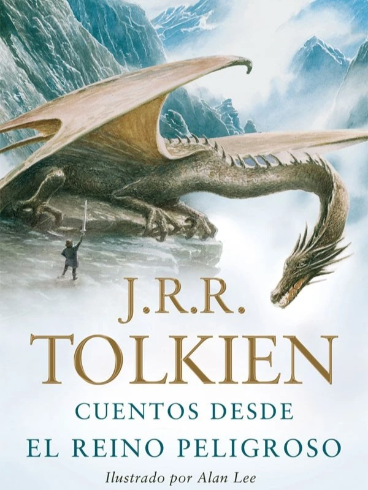
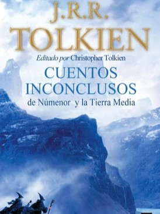
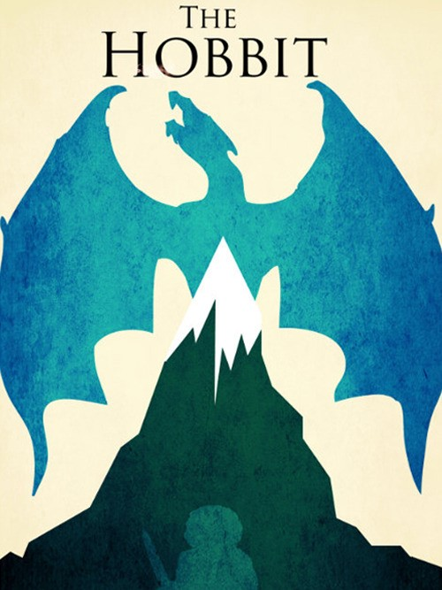
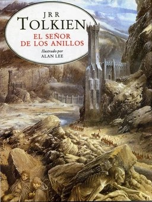
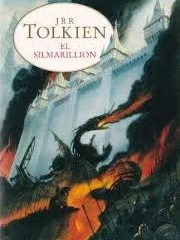
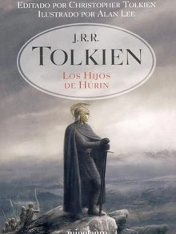

Bienvenido a Tierra Media
La Tierra Media (Middle Earth en inglés), también conocida como Endor, es el continente ficticio donde tienen lugar
la mayoría de los acontecimientos de las obras del escritor J. R. R. Tolkien. El nombre no es invención de Tolkien,
sino que proviene del inglés antiguo, y significaba el "lugar donde habita el Hombre". Es uno de los continentes de
Arda, el mundo donde se sitúa la totalidad del legendarium de Tolkien. Según el escritor, Arda es en realidad el
planeta Tierra en un pasado muy remoto, dando a entender que sus narraciones ocurrieron de verdad. Así pues, también
dijo que la Tierra Media estaba inspirada en Europa, y de hecho, algunos lugares coinciden en situación y aspecto.
También son llamadas las Tierras de Aquende, las Tierras Exteriores y las Grandes Tierras.
Categorías
Historia
La Historia de la Tierra Media se divide en tres grandes períodos las Edades de las Lámparas,
las Edades de los Árboles y las Edades del Sol. De estos tres períodos, solo las Edades del Sol
se encuentran enumeradas, y se componen de la Primera, Segunda, Tercera y Cuarta Edad del Sol.
Edades de las Lámparas
Apenas se tiene conocimiento del aspecto que presentaba la Tierra Media durante las Edades de las
Lámparas, aunque Tolkien dio algunos detalles sobre ello. Según algunos de sus apuntes, al principio
de todo, cuando Arda fue concebida, esta era simétrica, así como sus continentes y accidentes geográficos.
La Tierra Media, o Endor, se encontraba por entonces en el centro de Arda, como una gran franja
de Tierra, y se encontraba flanqueada por cuatro cordilleras: las Montañas Grises al norte y al sur,
las Montañas Azules al oeste y las Montañas Rojas o Orocarni al este. Justo en su centro se encontraba
el mar interior de helcar, casi circular; y en su centro se encontraba la isla de Almaren, primer hogar
de los Valar. Al norte y al sur del continente se hallaban Illuin y Ormal respectivamente, las Lámparas
que iluminaban el mundo por entonces.
Esta simetría sin embargo, se vio corrompida cuando Melkor, el Primer Señor Oscuro, derribó las
Lámparas y su caída hizo que se derramaran mares y se elevaran montañas, maculando la Tierra Media.
Edades de los Árboles
Después de la Caída de las Lámparas, la Tierra Media se deformó, y su costa se recortó, formando
grandes bahías y fiordos profundos, junto con la aparición de nuevas cordilleras. En el frío Norte,
Melkor levantó las Montañas de Hierro, y allí se estableció en su fortaleza de Utumno. Años más
tarde, Melkor volvió a modificar la Tierra Media levantando las Hithaeglir o Montañas Nubladas,
una altísima y escarpada cordillera creada para dificultar el viaje de los Elfos Primeros Nacidos
hacia el Mar. Después del cautiverio de Melkor en Aman, la Tierra Media no volvió a sufrir modificaciones
hasta el final de la Primera Edad. Durante esta época, la Tierra Media fue iluminada con la luz de
los árboles de Valinor, que Melkor envenenó posteriormente tras cumplir su cadena.
Edades del Sol
La muerte de los Dos Árboles forzó a Varda a crear una nueva fuente de luz para Arda, y creó
al Sol y a la Luna que desde ese momento iluminaron la Tierra Media y el resto del mundo. Por
aquel entonces, el lugar más poblado del continente era la tierra de Beleriand, al oeste de las
Montañas Azules y alrededor de la bahía de Balar.
En esta región tuvieron lugar los principales acontecimientos de la edad, en la que los pueblos
libres de la Tierra Media fueron casi derrotados completamente por Morgoth (nombre que fue dado a
Melkor posteriormente). Afortunadamente, los Valar accedieron finalmente a luchar contra Morgoth en la
llamada Guerra de la Cólera, en la que finalmente Melkor fue desterrado del mundo y arrojado a las Puertas
de la Noche. La Guerra de la Cólera produjo grandes consecuencias para la hechura de la Tierra Media,
y Beleriand fue inundado por las aguas, quedando aflorando solo la parte oriental, Lindon.
Primera edad
Varda consiguió crear el Sol y la Luna para que iluminaran Arda, pero su luz nunca se llegó a comparar con la de los Dos Árboles de Valinor. Fëanor, el más importante de los Noldor, enloqueció por el robo de los Silmarils por parte de Melkor, y fue junto a muchos de los Noldor a la Tierra Media, para recuperar los Silmarils. Sin embargo, Melkor (llamado ahora Morgoth por los Noldor) consiguió derrotar a Fëanor y a sus hermanos. Los Noldor que sobrevivieron emigraron a Beleriand, donde fundaron varios reinos junto con los Sindar, que ya tenían uno en Doriath. Años más tarde llegaron los Hombres, que aunque ayudaron a los Elfos en las luchas contra Morgoth, no consiguieron derrotarle. Sólo Beren, con la ayuda de Lúthien, consiguió recuperar un Silmaril. Morgoth acabo dominando casi todo Beleriand, y Eärendil, un Hombre marinero, navegó a Aman para pedir ayuda a los Valar. Éstos arrojaron a Morgoth en la Puerta de la Noche , donde quedará hasta la Dagor Dagorath. Beleriand fue inundado por las aguas del mar, y no quedo nada de él excpeto algunas de sus montañas, que se convirtieron en islas.
Segunda edad
Los Valar condenaron a Morgoth, pero no consiguieron encontrar a Sauron, un malvado Maia que era el servidor más temible de Morgoth. Éste se trasladó a la tierra de Mordor y construyó Barad-dûr, donde se proclamó el nuevo Señor Oscuro. Mientras, los Valar ofrecieron una isla a los Hombres para recompensarlos de su ayuda en la Guerra de la Cólera. Allí fundaron los Hombres el reino de Númenor, que prosperó durante muchos años. Los Hombres de aquel tiempo vivieron muchos años y fundaron varias colonias en la Tierra Media, siendo las principales las de Arnor y Gondor. Sin embargo, Sauron engañó a los Hombres con mentiras, y los persuadió a que atacaran Aman, pues los Elfos no les permitían a los Hombres pisar la tierra de Valinor. De ese modo, Ar-Pharazon, el último rey de Númenor atacó Eldamar , pero una gran ola provocada por Ulmo sepultó las naves y la isla de Númenor, y sólo los Fieles fueron los Hombres que sobrevivieron de aquel desastre. Los Valar ocultaron entonces Aman, y Arda pasó de ser plana a tener una forma esférica. Sólo los Elfos podrían navegar por Beleager y llegar finalmente al Reino Bendecido. En cuanto a Sauron, alcanzado por la ola, volvió a Mordor en forma de viento negro.
Tercera edad
Los Fieles huyeron a las colonias de Arnor y Gondor, donde prosperaron y fundaron importantes reinos. Sin embargo, sólo Gondor aguantó hasta después de la Tercera Edad. Sauron, recuperándose en Mordor, forjó el Anillo Único, y se dispuso a conquistar toda la Tierra Media. Gracias a una alianza entre las tropas del rey Elfo Gil-Galad y las tropas del rey de Gondor y Arnor, Elendil , lograron derrotar a Sauron, y el hijo de Elendil, Isildur, se quedó con el Anillo Único. Fue asesinado años después por Orcos en el Anduin, y el Anillo fue encontrado muchos años después por el hobbit Sméagol. Este quedó corrompido por el poder del anillo, y se transformó en Gollum. Cinco siglos más tarde el hobbit Bilbo Bolsón sería el siguiente portador del anillo. Gandalf, uno de los cinco Istari , sospechó que el anillo de Bilbo era el Anillo Único forjado por Sauron, y tras años de indagación vio que sus sospechas eran ciertas. A Frodo, el sobrino de Bilbo, le fue encomendada la tarea de arrojar el anillo en el Orodruin, donde se encuentra el único fuego capaz de destruir el anillo. Sauron, que se había vuelto a alzar en poder, fue de nuevo derrotado, pues Frodo logró cumplir su misión con la ayuda de la Comunidad del Anillo . Una vez la Guerra del Anillo terminó, la Tercera Edad llegó a su fin.
Cuarta edad
Fue esta la edad en que los Elfos desaparecieron de la Tierra Media y emigraron todos a Aman, pues la destrucción del Anillo afectó también a los Tres Anillos que ellos guardaban. Poco más se sabe sobre esta edad, pero se sabe que los Hombres dominaron a partir de este momento la Tierra Media. Muchos milenios después, Arda se convertiría en la Tierra tal y como la conocemos hoy.
Libros

Cuentos desde el Reino Peligroso
Libro que recopila cinco relatos de fantasía y aventuras escritos por J.R.R. Tolkien.

Cuentos Inconclusos de Númenor y La Tierra Media
Colección de relatos sobre la historia de la Tierra Media desde los Primeros Días hasta el fin de la Guerra del Anillo.

El Hobbit
En ella se relata la historia de Bilbo Bolsón, y de su viaje a la Montaña Solitaria junto con Gandalf y Thorin y Compañía para recuperar el reino de Erebor.

El Señor de los Anillos
Fue realizada como secuela debido al éxito de su anterior libro, El Hobbit, en el que apareció por primera vez la mítica Tierra Media y los hobbits.

El Silmarillion
Recopilación de historias resumidas de la Tierra Media escrita por Tolkien, pero editada y terminada por su hijo, Christopher.

Los Hijos de Húrin
Es una novela de fantasía épica escrita por J. R. R. Tolkien y editada por su hijo Christopher Tolkien.